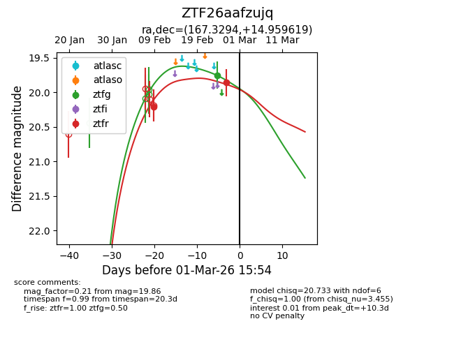
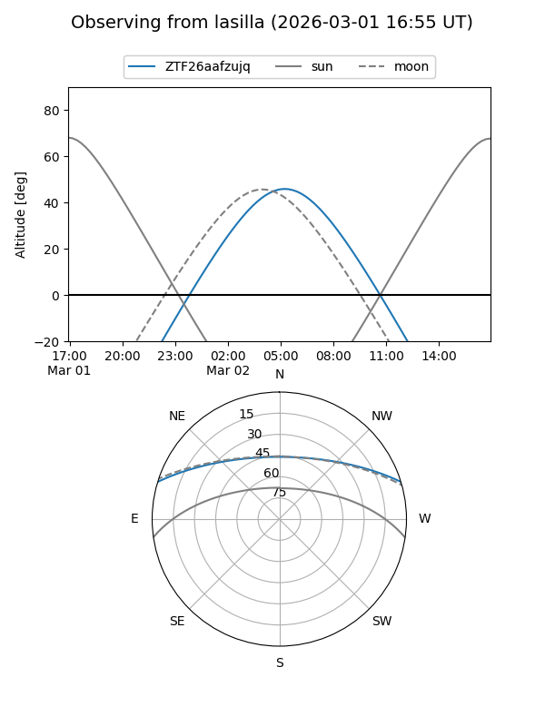
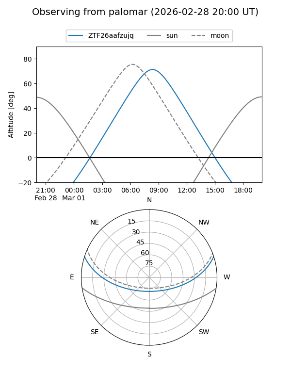
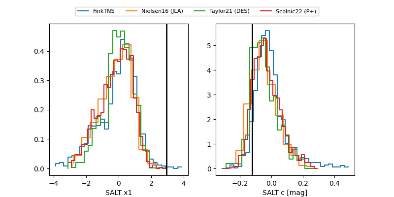

ZTF26aafzujq
Target ZTF26aafzujq at 2026-03-01 15:57
Aliases and brokers:
FINK: link
Lasair: link
ALeRCE: link
alt names
ZTF26aafzujq (ztf,fink_ztf)
Coordinates:
equatorial (ra, dec) = 167.3294,+14.95962
equatorial (HMS+DMS) = 11:09:19.06,+14:57:34.63
galactic (l, b) = (234.8785,+63.32630)
Flags:
Photometry:
last ztfg=19.75, ztfr=19.86
1 ztfg, 2 ztfr detections
Lightcurve

Visibility


Additional plots
